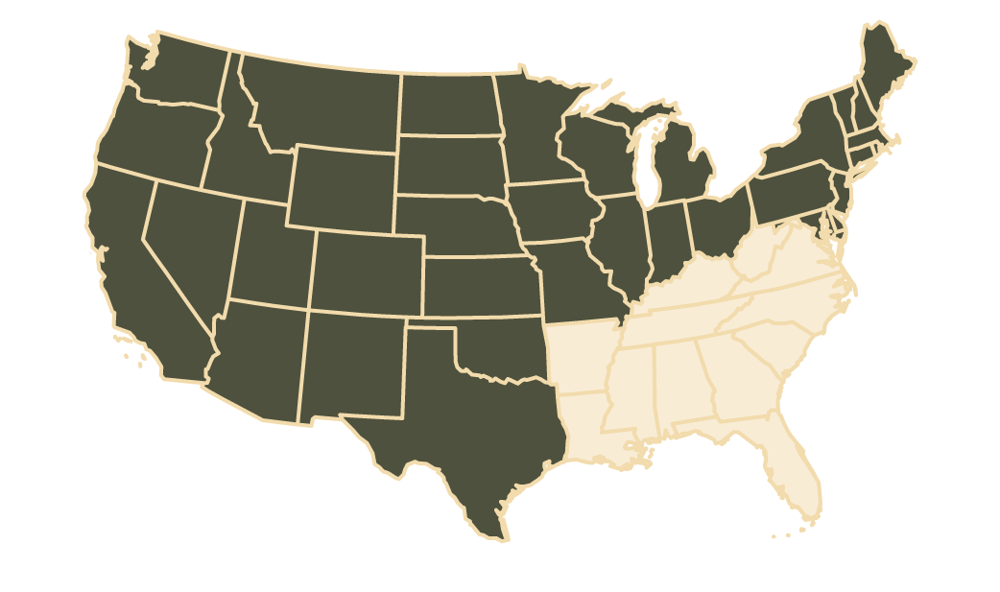

FRA Part 213 Eight states Weddington, N.C.
Track that isn't documented is track that gets shut down.
The moment a Class I carrier moves a car over your siding, Part 213 applies to it. We walk it, cite every defect to its section of the regulation, and put the report in your hands inside 48 hours.
FRACertified inspectors
0+Years average in the field
0+Projects on the record
Class IRailroad alumni
Plate I One panel of track, taken apart
Five layers.
Every one regulated.
01Rail§213.113
Scroll
The deliverable
Findings you can hand to the railroad.
Every finding written against its section of Part 213, located to the foot, ranked by priority and photographed. We note the milepost, rail side, severity and next action so your maintenance crew and the carrier's inspector work off the same page.
- Scope
- Industrial leads, plant spurs, loop and interchange track
- Independence
- Third party, dated, signed by the inspector who walked it
- Evidence
- Photographic, located and cited against the section
0hrFrom walking the track to a written report
Doerr Street Rail CoTrack inspection report — FRA Part 213No. 0800FIELD COPY / 01
| Section | Finding | MP | Priority |
|---|---|---|---|
| §213.109 | Defective tie cluster — four consecutive | 0.18 | 2 |
| §213.113 | Transverse fissure in rail head HIGH-RAIL SIDE | 0.44 | 1 |
| §213.127 | Spikes lifted, rail canting outward | 0.71 | 2 |
| §213.103 | Fouled ballast, ties pumping under load | 0.92 | 3 |
| §213.53 | Gauge 4′ 9⅛″ — within tolerance, monitor | 1.04 | — |
Why this lands on your desk
Ownership was never
the test. Carrier
movement is.
- 01Part 213 applies to your siding regardless of who holds the deed.
- 02A carrier can restrict or suspend delivery without warning. Production stops before the paperwork starts.
- 03A dated third-party inspection is the only thing in the room that argues back on your behalf.
Schedule of work
We inspect it.
Then we fix it.
Most firms do one or the other. Being a certified inspection firm and a railroad tie contractor means the defect list and the crew that closes it out come from the same place — with ties and other track material at our cost.
A — Inspection
- 01
Track inspection
Part 213 walk of industrial leads, sidings and spur track. Written and photographic findings, cited and prioritized.
- 02
New construction review
Independent sign-off on new industrial track before the railroad or the FRA accepts it.
- 03
Audit preparation
Violation remediation and readiness for a Class I audit. We know what the carrier's inspector opens the file looking for.
B — Remediation
- 04
Switch maintenance
Stands, points and machines inspected, lubricated and repaired so the plant keeps taking cars.
- 05
Rail & tie renewal
Defective rail, deteriorated ties and failed ballast replaced. Ties and OTM sourced at contractor cost.
- 06
Emergency response
Derailments, storm damage, service restrictions. Same-day mobilization across the footprint.
Where our track is
Paper mills aggregate loadouts chemical plants transload yards manufacturing lumber food processing short line railroads
Wherever private track meets a Class I, the same regulation applies and the same audit eventually arrives.

Weddington, N.C.Territory
Eight states, and the drive time to prove it.
North Carolina, South Carolina, Georgia, Florida, Tennessee, Alabama, Mississippi and Virginia — out of Weddington, N.C.
- 1–3
- Business days for a scheduled inspection
- Same day
- When a carrier has already stopped delivering

The firm
Three generations,
one trade.
Basil Sr. carried the family trade out of Pittsburgh and founded a contracting business in Ohio. His sons grew it into Polivka International, now serving all seven Class I railroads. The inspectors who walk your track came off that same railroad.
“Hard work was instilled into the bones of the Polivka family.”
Carpathian Rusyn Pittsburgh → Ohio, 1946 → Weddington, N.C.
Questions
Asked most often by plant managers.
01What areas do you serve?
We work out of Weddington, North Carolina and cover North Carolina, South Carolina, Georgia, Florida, Tennessee, Alabama, Mississippi and Virginia. We will travel outside that footprint for the right project — call and describe the site.
02What is an FRA Part 213 inspection, and do I need one?
Part 213 is the Federal Railroad Administration's Track Safety Standards. It governs any track a carrier operates over, including private industrial track receiving Class I car movements. If a railroad delivers or collects cars on your siding, plant spur or loop, that track is very likely subject to it.
03How quickly can you mobilize?
One to three business days for a scheduled inspection across most of the Southeast. Same-day or next-day when there is a service restriction, a derailment or an audit already on the calendar. For those, call 704 321 0802 rather than using the form.
04What exactly is in the written report?
Every observed deficiency with its Part 213 classification, precise location, severity and remediation priority, with photographs alongside the written findings. It is organized to be worked from — your maintenance team and your carrier can both act on it without translation.
05Do you handle the repairs as well?
Yes. We are a certified inspection firm and a major railroad tie contractor with direct access to ties and other track material at below-market cost. Tie replacement, rail work, ballast, switch maintenance and defect remediation all come from the same firm that wrote the report.
Request an inspection